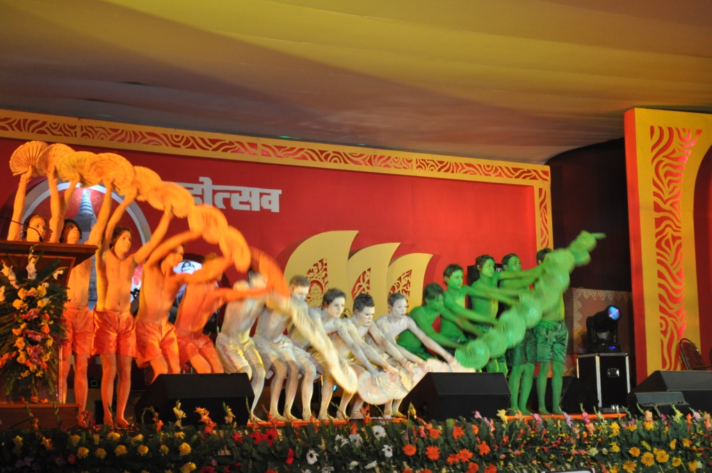
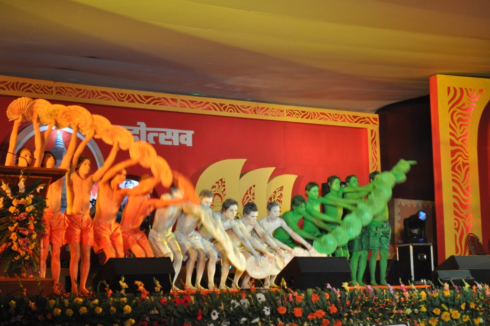

Bihar
- Home
- Food
- Fashion
- Festival
- Chatth Puja
- Shravani Mela
- Rajgir Mahotsav
 

Rajgir Mahotsav
Rajgir is the ancient capital of the Magadhan Empire in Bihar and is held sacred by both Jains and Buddhists because of its long association with Buddha and Mahavira.A Rajgir Mahotsav is held every year by the Department of Tourism, Bihar. It is a colourful festival of dance and music. A complete serene atmosphere is created here with the instrumental music, devotional songs, opera, folk dance, ballet and other dance and art forms. This festival held in the last week of October attracts a large number of tourists from around the world.
Shravani Mela
This festival or rather Mela is observed every during the month of Shravan (July-August). It is an important month-long ritual which is held along a 108 km long route linking towns of Deogarh and Sultanganj. The devotees who take part, known as Kanwarias, wear saffron-coloured clothes and collect water from the sacred Ghats at Sultanganj. They then walk barefoot on the 108 km long stretch to Deogarh to bathe the sacred Shiva-linga. This festival draws thousands of people from all around the country every year. - Rajgir Mahotsav

Chatth Puja
This is probably the most famous festival of this State. When one hears Chatth Puja, Bihar instantly comes to the mind. This is an actually an ancient Hindu festival which is dedicated to the Sun God, Surya, and take place 6 days after Diwali. It is an expression of thanks giving and seeking blessings from the Almighty for sustaining life on Earth. During this festival, the person observing Chatth, also known as Parvati, observes a fast from dawn to dusk which concludes with sweets. This fast is followed by another fast for 36 hours till the final day, when puja starts at the river, before sunrise. You can witness thousands of devotees and the river during this time. Witnessing Chatth Puja will let you witness the devotion in its true sense. - Shravani Mela
- Chatth Puja